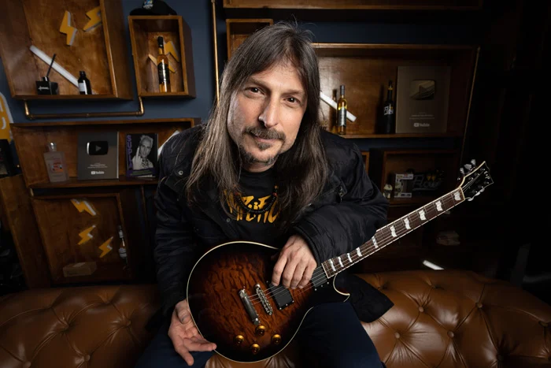
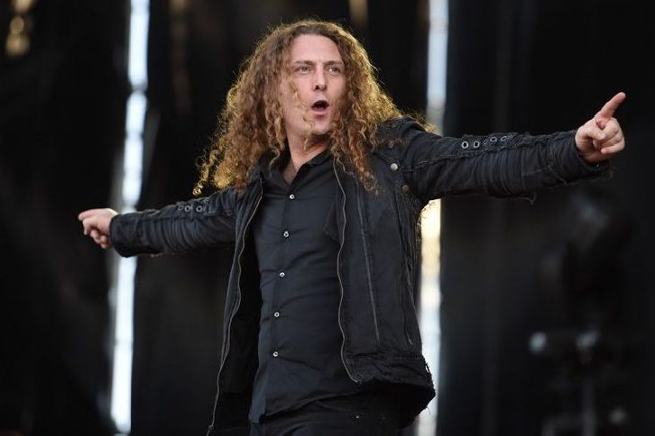
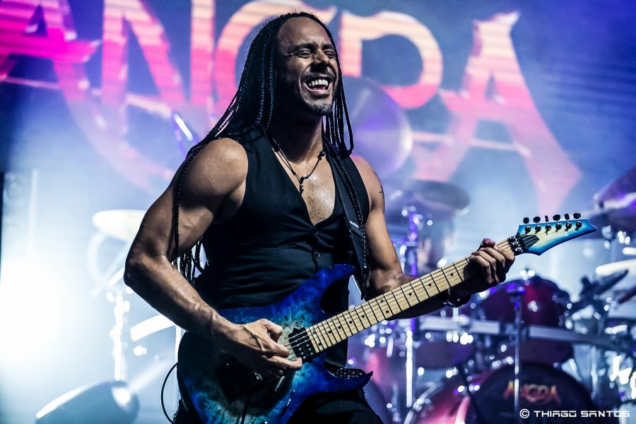
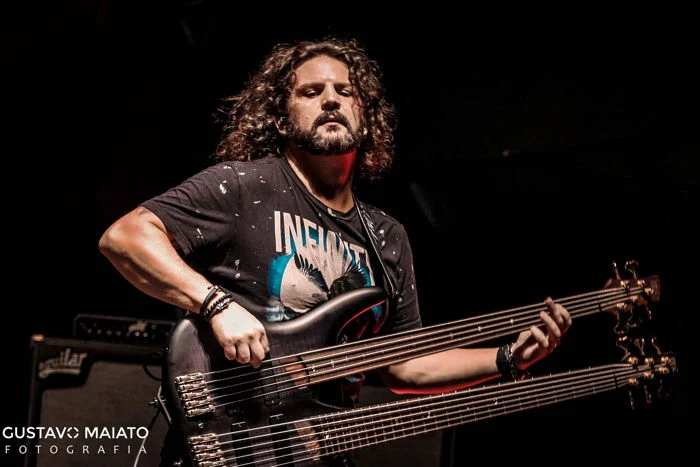
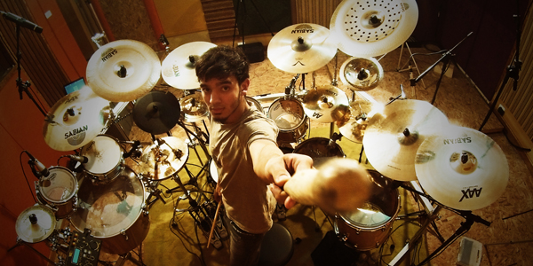
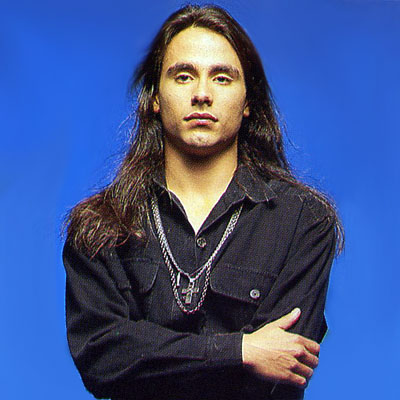
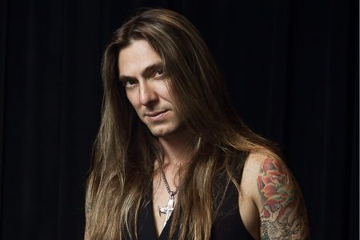
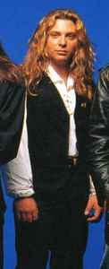
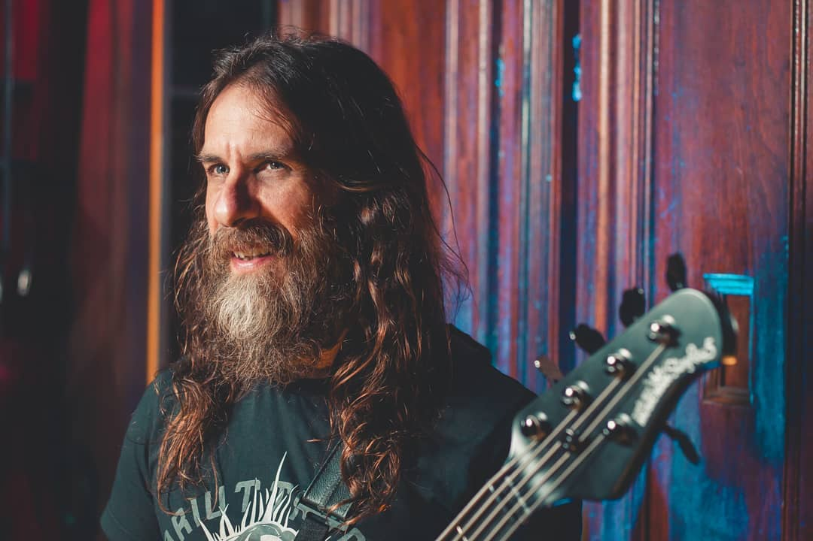

Integrantes da Banda
- Rafael Bittencourt - guitarra (fundador)
- Fabio Lione - vocais
- Marcelo Barbosa - guitarra
- Felipe Andreoli - baixo
- Bruno Valverde - bateria
Rafael Bittencourt é um guitarrista, compositor, cantor e produtor brasileiro, nascido em 1971 em São Paulo. Fundador da banda Angra em 1991, é reconhecido como um dos principais nomes do metal brasileiro, especialmente no symphonic metal. Iniciou sua formação musical ainda criança e, após experiências nos EUA e no Brasil, graduou-se em Composição e Regência pela Faculdade Santa Marcelina. Com o Angra, participou de todos os álbuns e ajudou a banda a conquistar reconhecimento internacional, especialmente no Japão. Também lançou um projeto solo, o Bittencourt Project, e atua como professor, palestrante, produtor e colunista. Adotou o nome artístico Rafael Bittencourt em homenagem a seus avós, figuras importantes na medicina e no direito. Com mais de 30 anos de carreira, é uma referência no metal mundial, valorizado por sua musicalidade técnica, criativa e sensível.

Fabio Lione, nascido Fabio Tordiglione em 1973 na Itália, é um renomado vocalista de heavy metal, conhecido por sua voz potente e versatilidade. Iniciou sua carreira nos anos 1990 e se destacou em bandas como Athena, Labyrinth e especialmente Rhapsody of Fire, com a qual se tornou referência no power metal sinfônico, gravando álbuns clássicos do gênero. Também participou de projetos como Vision Divine, Turilli / Lione Rhapsody e chegou a substituir temporariamente o vocalista da banda Kamelot. Em 2013, entrou no Angra, inicialmente como convidado, e logo foi confirmado como vocalista oficial, contribuindo para uma nova fase da banda com álbuns como Secret Garden e Cycles of Pain. Em 2025, lançou sua primeira turnê solo no Brasil, apresentando sucessos de sua carreira. Com mais de três décadas de trajetória, Fabio Lione é reconhecido mundialmente como uma das grandes vozes do metal, admirado por sua capacidade de se reinventar e manter relevância em diversas bandas e estilos dentro do gênero.

Marcelo Barbosa é um guitarrista, professor e empreendedor brasileiro, nascido em Brasília. Começou a tocar aos 12 anos e, aos 17, já era músico profissional. Fundou a escola de música GTR, uma das mais respeitadas do Brasil e da América Latina. Em 2002, estudou na Berklee College of Music, nos EUA, aprofundando-se em guitarra jazz e harmonia. É fundador da banda Khallice e integrou o Almah, com quem gravou álbuns e fez turnês internacionais. Em 2015, entrou para o Angra, substituindo Kiko Loureiro, e participou de álbuns e turnês, incluindo o elogiado OMNI (2018). Além da carreira artística, Marcelo é educador e autor de materiais didáticos, com grande influência na formação de novos músicos. Sua trajetória é marcada por excelência técnica, inovação no ensino musical e contribuição significativa ao metal brasileiro.

Felipe Andreoli, nascido em 1980 em São Paulo, é um dos principais baixistas do metal brasileiro, conhecido por seu trabalho com o Angra desde 2001. Começou a tocar aos 13 anos e estudou na Escola de Música Souza Lima. Antes do Angra, integrou a banda Karma e gravou com Paul Di’Anno, ex-Iron Maiden. Além do Angra, participa de projetos como 4Action, Matanza Ritual e colaborações com Kiko Loureiro. Também atua como produtor musical e professor. Reconhecido por sua técnica refinada, especialmente o pizzicato com três dedos, foi eleito um dos melhores baixistas do mundo pela revista japonesa Burrn!. Em 2021, lançou seu primeiro álbum solo, Resonance, com músicos renomados. Com turnês em mais de 30 países, Felipe é uma referência no baixo elétrico no cenário do metal mundial.

Bruno Valverde, nascido em 1990 em Lorena (SP), é um baterista brasileiro reconhecido por sua técnica e versatilidade. Iniciou na música aos 9 anos e, aos 15, venceu a etapa São Paulo do festival Odery & Modern Drummer. Tocou com Germán Pascual e na banda Suprema antes de ser convidado, em 2012, a integrar o Kiko Loureiro Trio. Em 2014, tornou-se baterista do Angra, estreando em uma turnê na Europa e gravando o álbum Secret Garden, que teve ótima recepção. Além da carreira com o Angra, atua como professor e youtuber, com mais de 120 mil inscritos. É considerado um dos principais bateristas do metal brasileiro contemporâneo.

Ex-Integrantes
- Andre Matos - vocal (fundador)
- Kiko Loureiro - guitarrista (fundador)
- Edu Falaschi - vocal
- Marco Antunes - baterista
- Luis Mariutti - baixo
André Matos (1971–2019) foi um dos maiores vocalistas do power metal mundial, além de compositor, maestro e pianista. Iniciou a carreira na adolescência com a banda Viper e, em 1991, cofundou o Angra, alcançando projeção internacional com álbuns como Angels Cry e Holy Land. Após deixar o Angra em 2000, fundou o Shaman, com grande sucesso, e depois seguiu carreira solo. Participou de projetos como Symfonia, Avantasia e Aina, destacando-se por sua voz marcante e formação erudita. Faleceu em 2019, vítima de um ataque cardíaco, deixando um legado essencial para o metal brasileiro e internacional. É lembrado como um ícone do gênero e maestro do metal nacional.

Kiko Loureiro, nascido em 16 de junho de 1972 no Rio de Janeiro, é um dos maiores guitarristas do metal brasileiro. Iniciou na música aos 11 anos e, em 1991, entrou para o Angra, ajudando a moldar o som da banda com sua técnica e criatividade. Gravou álbuns marcantes como Angels Cry e Temple of Shadows, e também construiu uma carreira solo com forte influência do jazz e da música brasileira. Em 2015, ingressou no Megadeth, com o qual venceu um Grammy por Dystopia (2016), e permaneceu até 2023. Reconhecido internacionalmente, Kiko é elogiado por sua versatilidade e inovação, sendo uma figura-chave na história do metal mundial.

Edu Falaschi, nascido em 18 de maio de 1972, é um renomado cantor e compositor brasileiro, conhecido principalmente por sua atuação como vocalista do Angra entre 2001 e 2012. Com a banda, gravou álbuns marcantes como Rebirth e Temple of Shadows, consolidando o Angra no cenário do metal melódico internacional. Antes disso, participou de grupos como Symbols e fundou a banda Almah, inicialmente um projeto solo que se tornou um nome forte no metal nacional. Edu é autor de sucessos como "Nova Era" e "Spread Your Fire" e também ganhou notoriedade por interpretar músicas dos Cavaleiros do Zodíaco, conquistando fãs no Japão. Após sair do Angra por problemas de saúde e desavenças internas, seguiu carreira solo com sucesso e retomou o contato com ex-integrantes da banda em clima de respeito mútuo. Além dos palcos, Edu atua como produtor, palestrante e professor de técnica vocal, sendo uma figura influente no metal brasileiro e internacional.
Marco Antunes foi o primeiro baterista do Angra, atuando entre 1991 e 1993. Participou da criação do álbum de estreia Angels Cry, contribuindo para músicas como "Evil Warning" e "Carry On", mas foi afastado durante as gravações, sendo substituído por Alex Holzwarth. Posteriormente, Ricardo Confessori assumiu a bateria. Marco ajudou a moldar a identidade inicial da banda, baseada em uma proposta de "world metal" com influências de Queensrÿche, Peter Gabriel e música brasileira, mas lamenta que o grupo tenha se adaptado ao power metal tradicional por pressão da gravadora. Ele também expressou frustração por não ter sido creditado adequadamente em suas contribuições. Apesar da saída precoce e do afastamento dos ex-colegas, Marco é reconhecido como peça fundamental na formação do Angra, deixando um legado importante no início da trajetória da banda e do metal nacional.

Luis Mariutti é um renomado baixista brasileiro de metal, conhecido por ser um dos fundadores do Angra. Atuou na banda entre 1991 e 1999, gravando álbuns clássicos como Angels Cry, Holy Land e Fireworks, e ajudando a consolidar o som do grupo no cenário internacional do power metal. Após sua saída do Angra em 2000, por divergências internas, formou o Shaman ao lado de André Matos e Ricardo Confessori, também alcançando sucesso. Além de músico, é produtor musical e autor de autobiografia, onde revela bastidores da cena do metal nacional. Participou de um show comemorativo dos 20 anos de Holy Land em 2016, reafirmando sua relevância histórica. Mariutti é uma figura central no metal brasileiro, com grande legado e influência no gênero.
